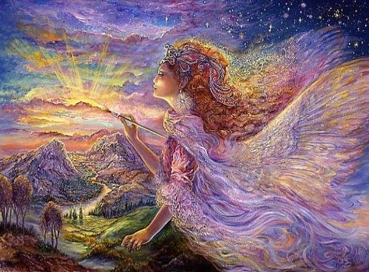
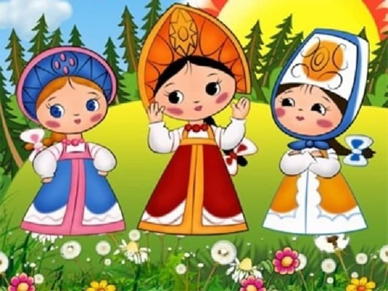
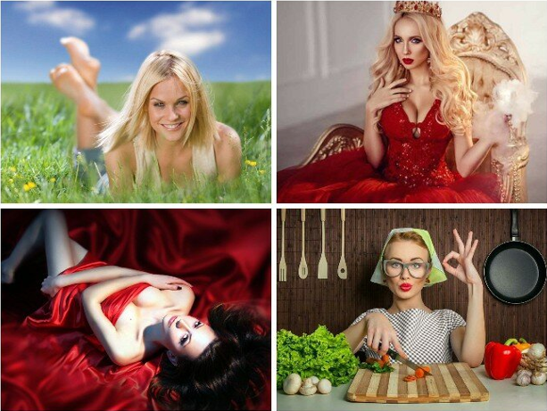
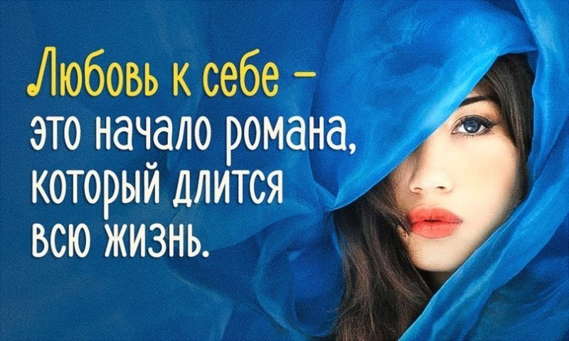

Я – Волшебница

Игра даёт понимание того, что лично Вы и только Вы являетесь творцом своего счастья.
Раскрывает понимание себя , даёт ресурс и указывает путь к исполнению желаний.
Будет увлекательное, расслабляющее, познавательное, развивающее путешествие к самой себе.
Игра поможет вам раскрыть в себе истинную женскую суть Волшебницы.
Мужчина в моей жизни
Вы хотите найти свою Вторую половинку?
Реализовать свою мечту о долгой, счастливой и взаимной любви?
Приглашаю всех желающих на увлекательную психологическую игру
"Мужчина в моей жизни", которая поможет Вам
- понять , чего лично Вы хотите в отношениях с мужчинами;
- какого мужчину Вы лично видите рядом с собой ;
- как такого мужчину привлечь в свою жизнь .
Слёт юных Василис

Игра для юных девушек.
Игра направлена на распознавание своей женской сущности, понимание своей женственности, самоидентификации себя как юной женщины.
Особенно актуальна в обществе, где стираются гендерные различия :
- в одежде
- в интересах
- в жизненных ролях и целях.
4 облика – 4 состояния женщины

О тех социальных ролях, которые «играем» мы, женщины, в зависимости от жизненных обстоятельств.
Игра даёт понимание и возможность коррекции ситуации и доминирования одной роли над другой.
Узнайте, какого состояния Вам не хватает и будьте счастливы !
Я + Ты = МЫ
Два человека, как две планеты, две звезды.. уникальны, непонятны....
Как найти свою звезду?
Об этом и многом другом психологическая познавательная игра "Я + ты = МЫ".
Я люблю себя – ЗА ВСЁ !

Игра о безусловной любви к себе.
Мы все знаем расхожую фразу – совет :
«Надо просто полюбить себя!»
А как это сделать ?
В чём состоит этот процесс ?
И вообще – за что меня любить ?!
Если другие-то не любят ?
ПОЗВОЛИТЬ СЕБЕ
Вы мечтаете быть счастливой, любимой, здоровой, гармоничной в отношениях, успешной, богатой, объехать весь земной шар на белой яхте???
Но.... Вы понимаете, что этим мечтам не сбыться никогда. Почему ?
Чаще всего лишь потому, что Вы сами себе этого не позволяете, даже не подозревая, что некоторые мечты вполне осуществимы !!
Я помогу Вам в этом разобраться !